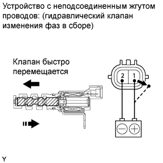

DTC P0010 Цепь датчика положения распредвала "A" (ряд 1) |

| № DTC | Условие обнаружения DTC | Неисправный участок |
| P0010 | Обрыв или короткое замыкание в цепи гидравлического клапана изменения фаз (логика диагностирования за 1 поездку). |
|

| 1.ВЫПОЛНИТЕ ДИАГНОСТИКУ В РЕЖИМЕ ACTIVE TEST С ПОМОЩЬЮ ПОРТАТИВНОГО ДИАГНОСТИЧЕСКОГО ПРИБОРА (УПРАВЛЕНИЕ ГИДРАВЛИЧЕСКИМ КЛАПАНОМ ИЗМЕНЕНИЯ ФАЗ) |
Подсоедините портативный диагностический прибор к DLC3.
Запустите двигатель.
Включите портативный диагностический прибор.
Войдите в следующие меню: Powertrain / Engine and ECT / Active Test / Control the VVT System (Bank 1).
Проверьте частоту вращения коленчатого вала двигателя, управляя гидравлическим клапаном изменения фаз с помощью портативного диагностического прибора при условии, что температура охлаждающей жидкости двигателя не превышает 50°C (122°F).
| Режим работы прибора | Заданные условия |
| Гидравлический клапан изменения фаз выключен | Нормальная частота вращения коленчатого вала двигателя |
| Гидравлический клапан изменения фаз включен | Двигатель глохнет или неравномерно работает на холостом ходу сразу после переключения гидравлического клапана изменения фаз из выключенного состояния во включенное |
|
| ||||
| OK | ||
| ||
| 2.ПРОВЕРЬТЕ ГИДРАВЛИЧЕСКИЙ КЛАПАН ИЗМЕНЕНИЯ ФАЗ В СБОРЕ |
Проверьте гидравлический клапан изменения фаз в сборе (Нажмите здесь).
|  |
Подсоедините положительный (+) вывод аккумуляторной батареи к контакту 1, а отрицательный (-) вывод – к контакту 2. Проверьте работу клапана.
Установите гидравлический клапан изменения фаз в сборе.
|
| ||||
| OK | |
| 3.ПРОВЕРЬТЕ ЖГУТ ПРОВОДОВ И РАЗЪЕМ (ГИДРАВЛИЧЕСКИЙ КЛАПАН ИЗМЕНЕНИЯ ФАЗ В СБОРЕ - ECM) |
Отсоедините разъем гидравлического клапана изменения фаз.
Отсоедините разъем ЭБУ.
Измерьте сопротивление в соответствии со значениями, приведенными в таблице ниже.
| Подключение диагностического прибора | Условие | Заданные условия |
| C54-2 (+) - C62-14 (OC1+) | Всегда | Менее 1 Ом |
| C54-1 (-) - C62-9 (OC1-) | Всегда | Менее 1 Ом |
| Подключение диагностического прибора | Условие | Заданные условия |
| C54-2 (+) или C62-14 (OC1+) - масса | Всегда | 10 кОм или более |
| C54-1 (-) или C62-9 (OC1-) - масса | Всегда | 10 кОм или более |
Подсоедините разъем гидравлического клапана изменения фаз.
Подсоедините разъем ECM.
|
| ||||
| OK | ||
| ||